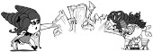

В самом темном углу парка на высокой, поросшей репейником и засыпанной снегом горе стоял ужасный замок.
На самом деле гора была не такой уж высокой. Да и репейника на ней росло от силы два-три кустика. И угол был не таким уж темным из-за разноцветных новогодних гирлянд. А если говорить совсем честно, замок был скорее маленьким двухэтажным домиком. Не очень-то и ужасным. Зато совершенно точно – запущенным.
Перекошенный, с черной крышей в ярко-красных заплатках, с потемневшими от сырости окнами, с башенками, обвитыми плющом, он прятался за кривым зеленым забором.
На крыше дома светилась ярко-желтая вывеска:
«ЗАМОК УЖАСОВ»
Внизу была надпись:
«Вас ждут самые настоящие ужасы, много криков, воплей и ночных кошмаров. Если вы не закричите, мы вернем вам деньги*»
И под звездочкой маленькая подпись:
*на самом деле не вернем
Днем никто не обращал на этот дом внимания – подумаешь, дом! Зато к вечеру, когда закрывались карусели, американские горки, вертолетики, тиры, вагончики со сладкой ватой и даже игровые автоматы, дети из последних сил тянули родителей на единственный работающий аттракцион.
Сереже идея идти в замок ужасов не понравилась сразу. Но папа захотел пойти, а мама захотела повеселить Сережу. Сережа не хотел их расстраивать. Он любил приемных родителей и знал: они желают ему только добра. Но как он мог радоваться аттракционам, зная, что его родная сестра Алиса куда-то пропала.
– Подходите, подходите, подходите! – перебил его мысли вкрадчивый голосок. – Меня зовут Зенгель, и я рад видеть вас в Лабиринте страха!
Под свет фонаря выступил очень странный человек. Высокий и тощий, он неловко ковылял на тонких ногах, напоминая огромного паука. Он подошел ближе, скрестил на груди костлявые руки и злорадно ухмыльнулся. У него было очень бледное худое лицо, окаймленное длинными черными волосами до плеч. На остром носу сидели очки с круглыми темными стеклами. Одет он был во все черное – старомодный угольно-черный сюртук, черные брюки, черные лакированные ботинки. На голове возвышался высокий черный цилиндр.
– Даю слово, – продолжил Зенгель, оглядывая гостей с ног до головы, – вы обязательно пожалеете, что пришли сюда. Очень-очень пожалеете! Здесь, в царстве тьмы и ночных кошмаров, вас ждет множество неприятных сюрпризов!
Ему на плечо приземлилась черная ворона и каркнула так, будто всё понимала.
Дети с интересом смотрели на ворону, родители как ни в чем не бывало обсуждали цену на билеты. Сереже казалось, он один чувствует себя неуютно. Алиса всегда просила его доверять ощущениям. У нее с этим был полный порядок. За день до своего исчезновения она стала какой-то грустной и неразговорчивой.
– Начнем! – Зенгель взмахнул рукой, и во двор выкатился маленький поезд из нескольких вагончиков, пестро размалеванных монстрами и чудищами. – Обещаю, вы столкнетесь с самой невероятной магией, которую только можете представить. Вам будет так страшно, что вы слова сказать не сможете. И как бы страшно вам ни было, какой бы ужас вы ни испытали, никогда не забывайте, – он поднял палец и выдержал театральную паузу, – за фотографию отдельная доплата.
В эту секунду взгляд Зенгеля упал на Сережу. Сережа увидел его хищные темные глаза и вздрогнул. У него даже мурашки по спине пробежались, а мурашкам стоит доверять. Сережа не заметил, как сильнее сжал папину руку. Папа поглядел на него с удивлением.
– Ты чего, Сереж? Это ведь всего-навсего аттракцион. Или ты правда боишься чудищ? – добавил он шутливо.
Сережа так разозлился, что вырвался из папиных рук, подошел к поезду и сел в самый первый вагон. Боится? Да он никого не боится! Он разве что немного трусит, но это не важно…
Двери открылись, и поезд поехал в темные коридоры лабиринта.
Зенгель долго провожал Сережу взглядом.
– Ты это почувствовала? – спросил он у кого-то. – Мальчик, кажется, не такой простак, как выглядит. Скажи-ка остальным, пусть сегодня постараются особенно сильно.
– Прринято! – отозвалась с его плеча ворона. Она взмахнула крыльями и полетела в дом.
Внутри дом был не таким заброшенным, каким казался снаружи. В нем жили русалки, гномы, гаргульи, оборотни и много-много кто еще. Вот только все они были ростом не больше пятнадцати сантиметров и назывались пугашками.
Пугашки – потомки древних злодеев ростом сантиметров пятнадцать. От предков у них осталась только способность вызывать у детей приступы страха. Да и то – несильные.
Трое из них как раз сейчас готовились к представлению. Маленький зеленый дракон в джинсовом комбинезоне – Зипп, девочка в голубом платье и с высокой прической из снежинок – Нежа, и мальчик в хулиганском наряде с золотой монетой на шее – Марик.
Зипп все выдувал и выдувал изо рта зеленый горючий газ.
– Что ты делаешь? – спросила его Нежа. Она как раз поправляла макияж и разглядывала себя в красивую серебряную пудреницу.
– Пы-пытаюсь вы-выпустить о-огонь, как и положено на-настоящему дра-дракону. У меня пока по-получается выдувать го-горючий газ, но я н-не могу выбить зу-зубами искру, чтобы его поджечь.
– У тебя же есть зажигалка, – напомнила Нежа, указывая на карман джинсового комбинезона Зиппа, – используй ее.
– С за-за-зажигалкой каждый мо-мо-может, – возразил Зипп, – а я хо-хочу сам.
– Я вот не могу, – Нежа поправила прическу, состоящую из снежинок, – я ведь потомок ледяных волшебниц, и с огнем мы совсем не дружим.
Она захлопнула пудреницу.
– Вот теперь я готова пугать.
– А зачем ты прихорашиваешься, если мы все равно будем пугать детей? – спросил Марик. – Насколько я знаю науку пугания: чем страшнее, тем лучше.
Нежа недовольно посмотрела на друга.
– Пугать тоже надо красиво, – гордо заявила она.
В этот момент в лабиринт влетела ворона Карра.
– Быстррее! Быстррее! Собиррайтесь! Готовьтесь! Дети вот-вот прриедут! Чтобы ни одного веселого рребенка не осталось! Пусть все плачут!
Карра приземлилась перед Мариком и уставилась на него своим черным глазом.
– Сегодня Зенгель прриказал особенно постарраться. По местам! По местам, скоррее!
Пугашки разбежались в стороны. Одни забрались в озеро, другие залезли под потолок, Зипп и Марик заняли место за кустом, а Нежа укрылась за большим пластмассовым скелетом.
Все заняли свои места, кроме Ады и Кэпа, которые в очередной раз не поделили самую удобную позицию – на лапе паука. Когда тележка проезжает под ней, можно спрыгнуть ребенку прямо на голову и в мгновение ока напугать и его, и окружающих. Аде даже удавалось пару раз довести несчастную жертву до икоты.
Ада и Кэп были старейшими жителями лабиринта, и из-за этого считали себя самыми важными.
Чертовка Ада носила темную одежду – подвернутые джинсы, кеды и широкий топ. Ее волосы были сплетены в похожие на косички тугие жгуты – дреды.
Кэп был потомком пиратов. Он носил пиратский костюм и подрисовывал себе маркером усы. Из-под пиратской шляпы торчали пышные красные волосы, а на поясе висел пистолет с абордажным крюком.
Чертовка и маленький пират сражались друг с другом, едва удерживая равновесие на паучьей лапе.
– Отстань! – кричала Ада, выгоняя Кэпа. – Это мое место!
Ада толкнула изо всех сил, и Кэп сорвался. Он полетел вниз, но изловчился, выхватил пистолет, направил его на паука и выстрелил. Из дула вылетел крюк, зацепился за паука. Кэп нажал на рычажок – и его потащило наверх. Еще в полете он ухватился за рога Ады и потянул ее вниз. Снова завязалась драка.
– Я самая страшная в лабиринте! – кричала Ада.
– Ты даже усов моих не стоишь! – возмущался Кэп.
– Они ненастоящие! Я сама видела, как ты их маркером рисовал.
– Ах так?!
– Хватит! Пррекратить! – закаркала Карра. – Сосрредоточиться! Дети уже близко.
Двери распахнулись, и внутрь въехал красный поезд.
Состав ехал, постукивая по спрятанным в пыльном полу рельсам.
– А мне совсем нестрашно! – заявила рыжая девочка в вязаной шапке с помпоном. – Все скелеты здесь пластиковые, а кровь из кетчупа.
Зенгель стоял в темном углу, перебирая пальцами, и пристально разглядывал детишек. Карра заняла место на его правом плече.
– Кетчуп? – шепнул он Карре с явным негодованием. – Кетчуп?! Как они могут быть обо мне такого плохого мнения? Неужели они не в состоянии отличить кетчуп от малинового варенья?
Поезд въехал в дремучий лес, затянутый паутиной. Из-за деревьев выглядывали картонные скелеты, с потолка свисали гигантские пауки с меховыми лапами. На одной из лап мех порвался, и из дырки торчала голая медная проволока.
Здесь и правда нечего было бояться – обычные нитки, куклы и тряпки. Только пахло сыростью, но это оттого, что с труб капала вода. И все-таки Сереже было неспокойно. Так неспокойно, что хотелось убежать. Может быть, дело в этом странном Зенгеле? Что-то с ним точно не в порядке. Или в тихих шебуршащих шагах изо всех углов? Ну и подумаешь, шаги! Это же обман, чтобы запугать.
Сережа вдруг заметил в углу какое-то движение.
«Нет, – подумал он, – нет, мне просто показалось. А даже если нет – может, это просто вентилятор шевелит какую-нибудь бумажку».
Движение повторилось. И это был не вентилятор! Это было какое-то маленькое существо, похожее на человека, только гораздо меньше. Свет мигнул.
– Прошу прощения, – откашлялся Зенгель за их спинами, – старые механизмы…
Папа рыжей девочки недовольно поглядел на часы.
– Вот что, – сказал он строго, – вы обещали, что будет страшно, а здесь только…
И не успел он договорить, как свет погас снова. Карра каркнула, подав пугашкам сигнал.
Загорелся свет, и пластмассово-тряпичный лес наполнился маленькими жуткими существами. Они кричали и корчили рожи, они скрежетали по поезду и по полу, забирались на вагоны и прыгали прямо на детей.
Дети визжали что было сил, пытались их стряхнуть, но ничего не выходило. Взрослые оглядывались, ничего не понимая.
– Да что происходит! – не выдержала мама рыжей девочки. Она схватила дочь за плечо. – Ладно, остальные дети, но ты, ты-то почему испугалась?!
На голове у мамы прыгала маленькая клыкастая гаргулья. Девочка залилась такими слезами, что могла бы затопить весь лабиринт, продлись это хотя бы полчаса.
Дети кричали, плакали и вжимались в родителей. А те глупо оглядывались и не понимали, что происходит.
Вагончики вкатились в следующий павильон, изображающий болото. Тут и там из черной воды, окутанной зеленоватым туманом, торчали пластмассовые скелеты. Островки мха мерцали тусклым светом.
Раздался всплеск воды, и из болота вынырнули крошечные русалки. Их волосы были облеплены тиной, руки тянулись к поезду. Русалки громко кричали. Дети затыкали уши, но это не помогало.
Поезд медленно катился между кочек, пугашки выпрыгивали, царапали, кусали и исчезали.
– Да что случилось?! – не понимала мама рыжей девочки. – Перестаньте кричать!
– Мама, разве ты не видишь?!
– Кого?
– Их!
– Это ведь только игрушки!
– Да нет же. Они живые! – не унималась рыжеволосая девочка. К ней присоединились и другие дети, дружно всхлипывая от страха.
Сережа озадаченно озирался по сторонам. Все это очень странно. Откуда взялись эти маленькие чудовища? И почему родители их не видят?!
В следующем павильоне из-под колес поезда выскочил самый настоящий призрак! Размером он был не больше котенка, но напугал всех. Громко завывая, он пронесся сквозь все семь вагончиков!
Наконец поезд въехал в узкий темный коридор. Дети сильнее вжались в родителей – все уже плакали и икали от страха. Сережа продолжал смотреть за происходящим спокойно и даже немного отстраненно.
Перед ним были монстры – никаких сомнений. Не куклы, не роботы, не качественно сделанные иллюзии – настоящие живые монстры. Но они были маленькими, и хотя бесконечно визжали, скрежетали и клацали зубами, они не тронули ни одного ребенка. Так стоило ли их бояться?
– Сережа, – тихо шепнула мама, – почему все дети так напуганы?
Сережа пожал плечами. Даже в свои семь лет он понимал, что родителям можно рассказывать далеко не все. Очевидно, что взрослые не видят монстров, иначе давно бы попадали в обморок. Это вообще любимое занятие взрослых. Когда они что-то не понимают, они падают в обморок. Ну или просят вернуть деньги.
Как раз в эту секунду перед Сережей выскочили три пугашки. Один из них был похож на обычного мальчика, разве что меньше ростом – растрепанные каштановые волосы, большие глаза, торчащие уши, джинсы, кожаная куртка и болтающаяся на шее монета, очень красивая.
Слева от него стояла девочка в голубом платье с волосами из снежинок, которые окружали ее плотным шаром. А справа маленький, но все-таки дракон! Настоящий зеленый дракон в комбинезоне!
Они хором закричали и начали строить рожи. Они явно ждали, что Сережа прямо сейчас испугается. Но он просто сидел и смотрел.
Марик старался изо всех сил, но не заметил никакой реакции.
– Ка-ка-кажется, он нас не-не-не боится, – шепнул Зипп.
– Или так боится, что онемел от ужаса, – скромно предположила Нежка.
Сережа покачал головой.
– Нет, – сказал он шепотом, – нет, не онемел.
На этот раз испугались сами пугашки.
– Он с нами говорит! – закричала Нежа.
– Он-он-он совсем не испу-пугался! – проикал Зипп.
Марик перестал корчить рожи и с любопытством уставился на странного мальчика – глаза у него были ярко-зеленые и какие-то чудны́е.
«Что это с ним?» – подумал Марик, но в тот же миг рыжая девочка закричала так, что всем пришлось заткнуть уши.
А закричала она потому что Ада и Кэп над ее головой снова поругались, подрались, слетели с паучьей лапы с криками:
– Я самый страшный в лабиринте!
– Нет, я!
Приземлились они ровнехонько на макушку рыжей девочки. Кэп ловко ухватился за помпон, а Ада скатилась вниз и оказалась на плече. Девочка скосила глаза, Ада заметила это и премило помахала рукой.
– Приветик! – сказала она бодро. – Как дела?
Вот в этот момент рыжая и завизжала! И визжала она так, что все обо всем забыли и стали думать только, как бы побыстрее оглохнуть. Потом девочка перестала кричать, отстегнула ремень безопасности и выскочила из поезда. Следом за ней сбежать постарались и другие.
– Без паники, – скомандовал кто-то из взрослых, – хватайте детей и за мной! Я видел, где здесь выход.
Через пару минут лабиринт опустел. Зенгель стоял на улице, кутаясь в черное пальто, и недоверчиво смотрел на Сережу.
– Верните нам деньги! – потребовал папа рыжей девочки. – Это не аттракцион, а сплошное безобразие.
– Вените нам теньги! – попытался передразнить Зенгель, но папа схватил его за ворот пальто и хорошенько встряхнул. Зенгель тут же расплылся в притворной улыбке.
– Уже и пошутить нельзя. Вот, забирайте. Надеюсь увидеть вас еще, – крикнул он вдогонку, потом повернулся к Карре и недовольно застонал.
– Вернуть деньги! Они все еще пожалеют, когда Королева осуществит свой план.
– А когда именно? – с любопытством поинтересовалась Карра, сидя на плече у Зенгеля.
Зенгель схватил ее за хвост и поднес к лицу.
– Не твое воронье дело, – протянул он недовольно, – лучше скажи мне, что ты думаешь о том мальчике, который сидел в первом вагоне?
– Он не выглядел испуганным, – отозвалась Карра. Зенгель нахмурился и подбросил ее над головой.
– Тогда почему ты еще здесь? Лети и проследи за ним. Сейчас же! А мне, – добавил он тихо, – предстоит разговор с этими недоумками – пугашками.
Когда уходили дети, дом возвращался к привычной жизни. Пугашки устроились в гостиной за длинными столиками и принялись за ужин. Марик с удовольствием грыз яблоко и думал о странном госте, который посетил их сегодня.
– Вот бы дети нас не боялись, – пробормотал он задумчиво, – тогда не пришлось бы торчать здесь и работать на Зенгеля.
– И что бы ты тогда делал? – поинтересовалась Нежа, уплетая очередную порцию мороженого. Больше всего на свете она любила мороженое, особенно клубничное.
– Ну… – задумался Марик, – я бы… выступал. На арене цирка! Самый ловкий, самый необычный, самый сальтоделающий и никогда не падающий Ма-а-арик! – прокричал он и поднял руки, как будто ждал аплодисментов.
– А какие у тебя были бы номера? – продолжала допытываться Нежка.
Марик снова задумался.
– Ну… я бы… я бы укрощал дикого дракона!
– М-меня?! – удивился Зипп.
– Его? – рассмеялась Нежа.
– Ну а что? – продолжал Марик. – Разве не здорово? Вы только представьте: каждый день пахнет попкорном, все яркое, красочное, и дети смеются, а не визжат от страха. По-моему, цирк – отличная идея!
– Цирк?! – в лабиринт вошел Зенгель, еще больше побледневший от злости. – Какой цирк?! – завыл он. – Какое веселье?! Вы же злодеи. Зло-де-и!
– Не злодеи, а потомки злодеев, – поправил Марик.
– Думаешь, я не помню?! – простонал Зенгель в ответ. – Были бы вы хоть чуть-чуть такими же страшными, как ваши предки, мы бы не теснились в этом полуразрушенном доме и не зарабатывали деньги, пугая детишек! Вот ты бы, – он ткнул пальцем в Нежу, – заморозила всех продавцов мороженого и пообещала, что не разморозишь, пока нам не выдадут замок… нет, лучше два замка! Два замка и один загородный дом.
Нежа как ни в чем не бывало ела мороженое.
– А ты бы, – продолжал он, указав на Зиппа, – ты бы зажаривал врагов до хрустящей корочки! Или хотя бы шашлыки нам готовил!
Зипп испуганно втянул голову в плечи.
Ну а ты! – Зенгель с тоской взглянул на Марика. – Твой предок – самый ужасный в мире злодей. Да одно его имя наводило на людей такой страх, что все боялись его спрашивать. А ты, славный потомок, только и думаешь что о каком-то цирке.
– Не о каком-то, а о самом лучшем в мире! – насупился Марик.
– Бездари! – продолжал причитать Зенгель. – Неумехи. Даже хуже! Гораздо хуже! Вы все… – он выдержал театральную паузу, – вы все добрые!
В лабиринте зашептались.
– Да как вы смеете?! – возмутилась Ада. Она вышла в центр зала и подбоченилась, – мы старались как могли!
– Да и детишки визжали как оглашенные, разрази меня гром! – добавил Кэп.
– Визжали, да не все! – нахмурился Зенгель. Он снял очки и подышал на темные стекла. Затем принялся протирать их огромным носовым платком. – Был один мальчик, который только смотрел на вас и молчал, как будто ему совсем не страшно. Ведь так, Ма-а-арик?
Марик опустил голову. Он не любил пугать детей. Он, говоря по правде, ненавидел пугать детей даже больше, чем холодную манную кашу. Но до сегодняшнего дня ему всегда легко удавалось напугать ребенка. Видимо, пугашки были подвержены магическому воздействию, потому что дети убегали при одном только их виде. Даже если пугашки не делали ничего плохого. Да даже если делали хорошее – например, раздавали конфеты. Но на этот раз… на этот раз мальчик не испугался.
– Мы не виноваты! – упрямо заявил Марик. – Мы все делали как обычно. Это с этим ребенком что-то не…
– Цыц, – перебил его Зенгель.
– Да я вообще не понимаю, зачем мы их пугаем?! – взорвался Марик. – Ну дети и дети, пусть себе живут!
Зенгель так разозлился, что подскочил со стула и начал ходить из одного угла комнаты в другой, размахивая длинными костлявыми руками.
– Зачем? ЗАЧЕМ?! – завыл он. – Да это же наш священный долг! Сейчас, сейчас. – Он остановился и принялся хлопать себя по пальто, пока наконец не достал из внутреннего кармана старый свиток. Начал его разворачивать, но тот все время сворачивался обратно.
– Я сплю! – заявил свиток и для убедительности даже зевнул.
– Нет, не спишь! – Зенгель снова попытался его развернуть. На этот раз свиток поддался, а потом резко закрутился и ударил Зенгеля по пальцу.
– Ай! – закричал Зенгель.
– Спокойной ночи, – пробормотал свиток.
– Мне нужно доказать этим мелким бездельникам, что пугать детей – их священный долг! – голос Зенгеля стал почти умоляющим. Но свиток определенно не собирался его слушать.
– Не для того меня создавали древние колдуны, чтобы я что-то кому-то доказывал, – протянул он, зевая, – вот если бы ты захотел скормить мне пару чернильных баночек… желательно с каким-нибудь ароматизатором, ням-ням, – свиток слегка открылся. – Впрочем, раз твои вопли и мольбы все равно меня разбудили, я, пожалуй, снизойду до вас, бездарей, и отвечу на вопрос.
Он откашлялся.
– Итак, зачем маленькие потомки злодеев, которые называются пугашками, должны доводить детей до слез, криков и икоты? Где-то это у меня было. Глава… глава четырнадцать, параграф три. А, вот оно. И свиток принялся напевать:
Любой пугашка каждый день
(И каждый это знает)
Пугает всех, кого не лень,
И, кого лень, пугает.
Но почему закон таков?
Вам песнь моя ответом.
На протяжении веков
Бродило зло по свету.
Драконы, джинны, колдуны,
Русалки, пикси, ведьмы.
И много тысяч лет они
Пугали всех до смерти.
Но в самый страшный день с утра
(По-моему, в апреле),
Вдруг силы гадкого добра
Злодеев одолели.
Свиток замолчал, выдержал паузу, а потом произнес громким голосом:
– Внимание-ВНИМАНИЕ! Сейчас будет припев. Все, кто знают слова, подпевайте.
Он откашлялся и продолжил:
Какой кошмар! Беда из бед!
Злодеев в мире больше нет!
Ой-ой, ай-ай, ий-ий, ей-ей,
Кому теперь пугать людей?!
Никто не подпевал, и свиток, тяжело вздохнув, продолжил:
Злодеи сгинули, увы,
Их в книгу заключили.
А их потомков (это вы)
Лишили прежней силы.
И вот остатки Лиги зла,
Решили, что нелишне
Пугашек с самых разных стран
Учить пугать детишек.
С тех пор ваш самый важный долг,
Хоть вы и неумёхи:
Бороться с гадостным добром
И делать детям плохо.
Свиток выдержал торжественную паузу, явно ожидая аплодисментов. Но все молчали. Только Зипп робко хлопнул два раза и замолчал. Тогда свиток фыркнул и недовольно пробормотал:
– Это все потому, что я не распелся.
Он выскочил из рук Зенгеля и залетел в карман его пальто. А еще через секунду из кармана вывалилась бумажка, на которой красным по белому было написано:
СВИТОК ОБИДЕЛСЯ И СПИТ. ПРОСЬБА НЕ БЕСПОКОИТЬ.
В этот момент в лабиринт влетела Карра. Она немного покружила над пугашками и уселась на костлявое плечо Зенгеля. Ее маленькие глазки подозрительно уставились на притихших друзей.
– Бездаррри! Трррусы! – заявила она, а потом тихо добавила, глядя на Зенгеля: – Пррроследила.
– Интересно, за кем? – шепнула Марику Нежка.
– Молчать! – рявкнул Зенгель. – Сами все узнаете. Вы, – он недовольно сморщился, – вся ваша троица, сейчас же отправитесь на крайне ответственное задание. Вы должны будете довести до слез того самого мальчика, которого не смогли напугать в лабиринте.
– А почему мы? – удивился Марик.
– Вот именно! – подтвердила Ада. – Все знают, что я самая талантливая. Значит, крайне ответственное задание должна выполнять именно я.
– Еще чего, разрази меня гром! – возмутился Кэп. – Да любой ребенок предпочтет прогуляться по рее, лишь бы не встречаться со мной!
– Это потому, что от тебя все время несет тиной, – засмеялась Ада. Кэп бросился было на нее, но Зенгель ловко поймал пугашек и поднял на уровень глаз.
– Тихо! – в очередной раз скомандовал он. – Если вы так хотите, тоже пойдете. А для тебя, – кивнул он на ворону, – у меня особенное задание. Секретное!

Ночью небольшой городок спал. Было холодно, крупными хлопьями падал снег. Марик сильнее закутался в ярко-оранжевый шарф и поправил шапку. «Зиппу и Неже хорошо, – думал он. – Зипп – дракон, и ему всегда тепло, потому что у него очень горячая кровь. А Нежка вообще потомок ледяных волшебниц и в холоде чувствует себя прекрасно».
Да что уж тут говорить! Прямо сейчас она уплетала мороженое!
Хуже всего приходилось Аде. Ада привыкла жить в тепле, недалеко от котла, поэтому даже сейчас, укутанная в куртку, шубу, четыре шарфа и три шапки, она стучала зубами и скакала с ноги на ногу.
– Г-г-где же этот дом!
Карра летела над ними и показывала дорогу.
– Прррямо вперреди, – махнула она крылом, – трретий этаж.
Марик осмотрел дом, в котором, по словам Карры, жил Сережа, и нахмурился. Это был пятиэтажный многоквартирный дом, старенький, но уютный. У подъездов росли высокие деревья, часто выше крыш, а в центре двора стояла занесенная снегом яркая детская площадка – настоящий замок с башнями, мостиками, канатами и качелями.
Марик засмотрелся на этот замок. Было бы здорово полазить здесь, хотя бы несколько минут…
– Ну и как мы сюда заберемся? – перебила его мысли Ада.
– Карра может нас подсадить, – предложила Нежка.
– Ррразмечтались! У меня свое задание. А вы – как хотите, так и рразбирайтесь!
Карра покружилась над пугашками и улетела на соседнюю крышу. Там она и уселась, нахохлившись.
– Вот курица, разрази меня гром! – пробормотал Кэп. Он тоже мерз, поэтому натянул меховую шапку прямо на шляпу пирата. Но даже на холоде он не забыл подрисовать себе усы маркером.
– Если бы Зипп умел летать… – задумчиво пробормотала Нежа.
– Если бы да кабы! – хмыкнула Ада. – Лучше придумай план. Ты же у нас самая умная в лабиринте.
Нежа сощурилась и огляделась.
– Глядите! – заявила она довольно. – Форточка открыта! Нужно только как-нибудь до нее добраться.
– У меня есть абордажный крюк, – предложил Кэп, приподнял повязку, которой закрывал совершенно здоровый глаз, и, сложив ладонь козырьком, внимательно пригляделся, – только он не достанет. И что нам, тысяча чертей, делать?
– А м-м-может д-д-домой? – неуверенно предположил Зипп. – А т-то т-темно уже, с-с-трашно.
– Нельзя! – возмутилась Ада. – Приказы надо выполнять.
Марик внимательно изучил двор, и в его голове созрел план.
– У меня есть идея! – он потащил друзей к детской площадке. Забрался на горку, оттуда на верхнюю перекладину качели, оттуда допрыгнул до ветки дерева и начал ловко карабкаться вверх.
Остальные последовали за ним. А Кэп даже обогнал, потому что пользовался своим крюком. Зипп пару раз чуть не сорвался, но Нежка его удержала. Сама она тоже не очень хорошо лазила, зато с помощью магии создавала изо льда ступеньки.
Вскоре вся команда оказалась на ветке рядом с Сережиным окном. Кэп выстрелил абордажным пистолетом, друзья ухватились за него и полетели прямиком в открытую форточку.
Ком из пугашек влетел в комнату, рухнул на мягкий ворсистый ковер и закатился под кровать.
– Ай! – закричала Нежка. – Все волосы спутались.
– Тише! – шикнула ей Ада.
– А-а-а-апчхи! – чихнул Зипп. – П-п-простите!
– Кто здесь? – спросил с кровати Сережа.
Пугашки дружно замолчали. Зипп даже закрыл рот лапой, чтобы случайно снова не чихнуть.
– Странно, – продолжил Сережа, – мне показалось, я кого-то слышал.
Он встал с кровати – пугашки видели только его ноги – и прошел к окну.
Зима в этом году выдалась на редкость снежная и морозная. Крупные снежинки продолжали медленно сыпаться с небес, постепенно укрывая город пушистым одеялом.
До Нового года оставалось всего два дня, и, казалось, в воздухе царила атмосфера праздника. Будто весь мир готовился к какому-то чуду. Но Сережа чувствовал кое-что другое.
«Чудо будет, – почему-то подумал он, – но не обязательно оно будет хорошим».
Возможно, именно это чувство тревоги, или уверенность, что он кого-то слышал, или страх, что он впервые отметит Новый год без сестры, заставили Сережу сделать то, чего он никогда раньше не делал.
– Дед Мороз, – сказал Сережа, глядя в окно, – я никогда раньше тебя ни о чем не просил и даже не всегда верил в тебя, но на этот раз я очень-очень прошу исполнить всего одно мое самое заветное желание. Я больше всего на свете, больше всех игрушек в мире, хочу вернуть сестру, – он немного помолчал и добавил, посмотрев на фотографию: – У нас была замечательная семья. Потом мы попали в аварию, и родители погибли. У нас с Алисой осталось только это фото. Но в приюте мы поддерживали друг друга, несмотря ни на что. А потом… – он зажмурился, стараясь удержать слезы, – а потом пропала и она. Поэтому, пожалуйста, верни мне ее. Пожалуйста.
Нежка утерла выступившую слезу. Марик с Зиппом переглянулись, и Зипп вдруг всхлипнул.
Сережа быстро обернулся.
– Кто здесь?
Нежка зажала Зиппу рот. Сережа снова отвернулся и вгляделся в темно-синее небо с желтыми точками звезд.
Ада потянула Нежку за руку.
– Идем, самое время хорошенько его напугать.
– Если очень постараемся, он грохнется с подоконника, – поддакнул Кэп, – вот смеху-то будет!
– Нет! – почти одновременно сказали Марик, Нежка и Зипп.
– Я не буду его пугать, – Нежа сложила руки на груди, – мне его жалко.
– И м-м-мне, – подтвердил Зипп.
Ада смотрела на друзей так, словно только что съела самую кислую в мире ягоду. Да еще подавилась косточкой.
– Мы же пугашки! – зашипела она. – Мы не должны никого жалеть. Я не позволю вам провалить МОЕ задание, так что оставьте эти глупые мысли.
– ТВОЕ?! – зарычал Кэп. – Это мое задание!
– Нет, мое!
– Мое!
– Мое!
– Хватит! – попытался остановить их Марик, но было уже поздно. Кэп бросился на Аду, они схватились в драке и оба выкатились из-под кровати. Марик, Нежа и Зипп побежали следом, надеясь затащить их обратно, но не тут-то было.
Сережа уже заметил их и смотрел широко открытыми глазами.
Кэп достал свой абордажный пистолет, выстрелил. Крюк обмотал ручку окна. Нажав на рычажок, пират полетел вверх.
– Стой, а как же я! – Ада схватилась за его сапог. – Я тоже хочу пугать.
– Отстань! – Кэп попытался ее скинуть.
– Еще чего!
Вместе они грохнулись на подоконник. Ада попыталась поправить прическу, но попробуй уж тут что-то поправить, если у тебя на голове и рога и дреды.
– Бу! – закричала Ада. Она выпучила на Сережу глаза, подняла руки и согнула пальцы, изображая когтистую лапу. – Бу-у-у-у!
Это было очень странно, но Сережа не закричал. Он даже не пискнул, не охнул и не начал икать! Его волосы не встали дыбом, а на глазах не выступили слезы!
Ада удивленно смотрела на него и не могла поверить. Ее ужасность – что, сломалась?
– Бу! – повторила она. – Бу-бу-бу! Бу-буууууу!
Может, она как-то неправильно использовала слова? Может быть, она что-то перепутала?
– Уб? – сказала Ада неуверенно. Но эффекта снова не было.
Кэп за ее спиной расхохотался.
– Отлично сработано! – заявил он с насмешкой. – Смотри и учись у профессионалов.
Он вышел вперед, поправил шляпу, откашлялся и громким уверенным голосом рявкнул.
– АРРРРР!
Сережа огляделся по сторонам, будто ждал чего-то, а потом пожал плечами.
– Прошу прощения, – сказал он с присущей ему вежливостью, – я бы хотел сказать, что испугался, но мои родители учили меня не врать.
– ЧТО?! – закричал сбитый с толку Кэп. – Разрази меня гром! Ты не мог меня не испугаться!
Сережа виновато поджал губы.
– Я пытался, – честно признался он.
– Даже так не страшно? – Кэп достал шпагу и выставил перед собой.
– Так совсем чуть-чуть, – попытался утешить Сережа.
– Настолько страшно, что хочется закричать и позвать маму?
– Не настолько, – виновато произнес Сережа.
Кэп и Ада совсем расстроились.
– Может быть, в следующий раз повезет, – попытался он их утешить, – уверен, обычно вы очень страшные. Просто сегодня у меня непугливое настроение. Голова болит и все такое.